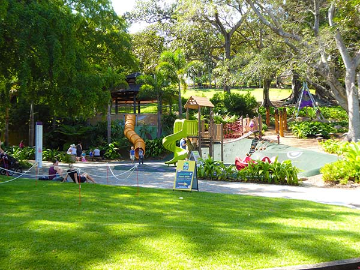

This Page Shows Individual Results

Nestled just a 10-minute walk from Brisbane’s CBD lies the Roma Street
Parkland and Spring Hill precinct. A haven for the a la mode, Spring Hill
features an assortment of trendy cafes and restaurants, interwoven with historical
monuments such as the heritage-listed Old Windmill and the Spring Hill Baths.
Meanwhile Roma Street Parkland offers a distinctly different experience, with
designer gardens and sprawling lawns that wind around 16 hectares of stunning parklands.
Well known by garden and plant enthusiasts for its exceptional horticultural standards,
it is also a popular visitor destination, housing free barbeques, playgrounds
and a year-round calendar of events.
Rating:
Co-ordinates:
-27.461694, 153.017868
Reviews:
Very good place to visit, nice and quiet and a good place to go with the kids.
Review rating: